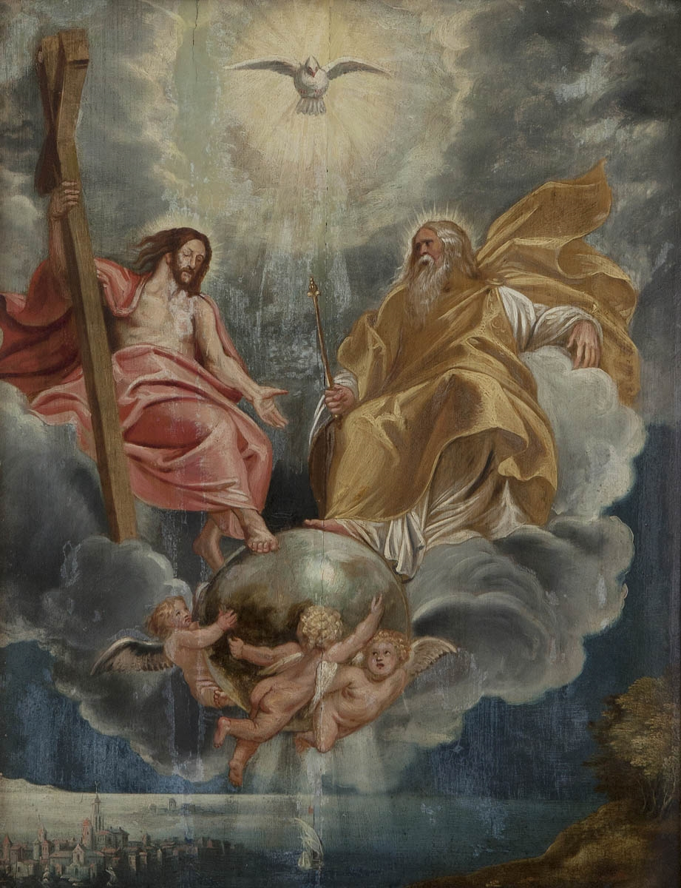
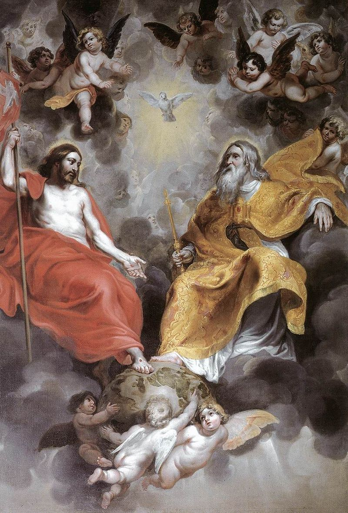
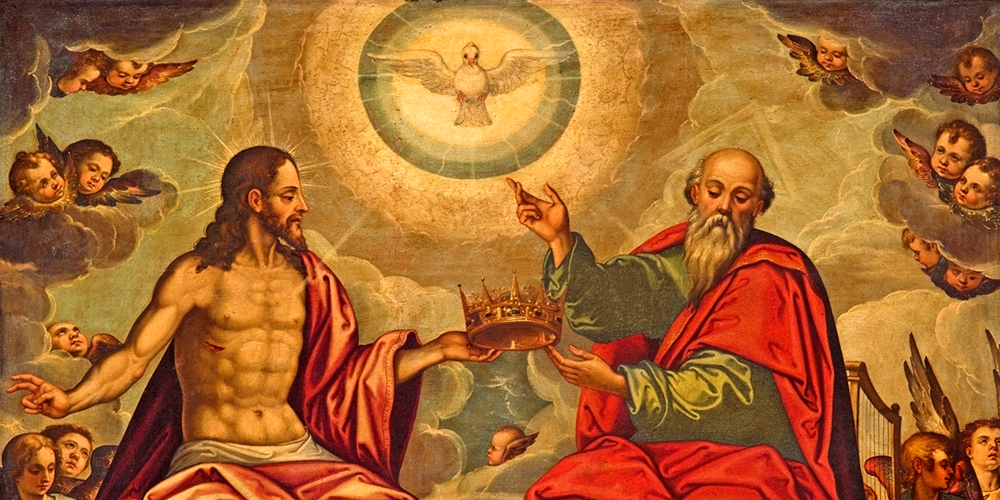
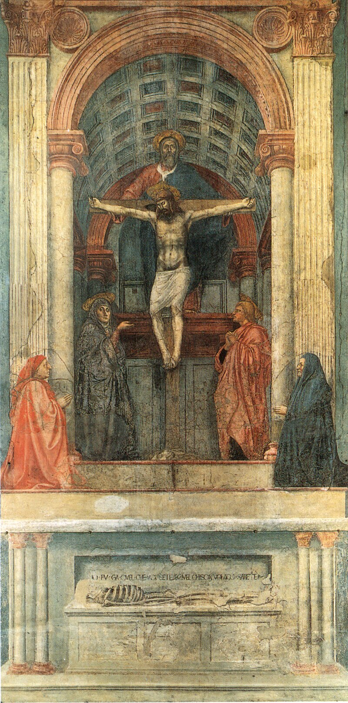
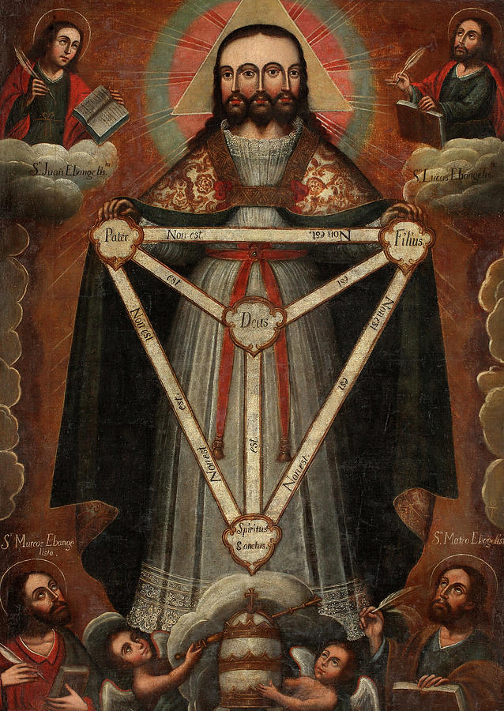
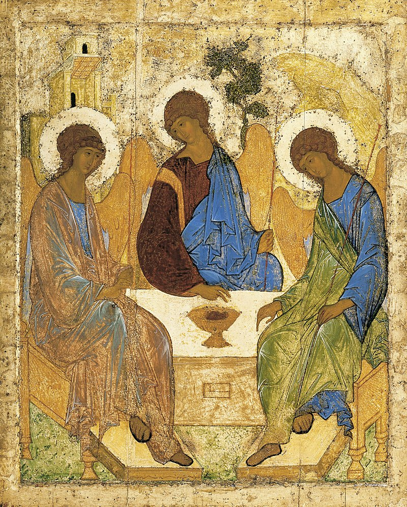
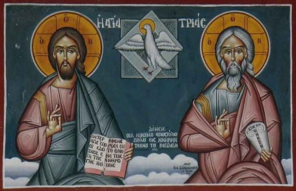

O Mistério da Santíssima Trindade
Prefácio
A Santíssima Trindade é um dos mistérios centrais e mais profundos da teologia cristã. Ela representa a crença em um único Deus em três pessoas distintas: o Pai, o Filho (Jesus Cristo) e o Espírito Santo.
Este conceito é fundamental para a maioria das denominações cristãs e é considerado um mistério porque transcende a compreensão humana plena.
Doutrina da Trindade
• Unidade e Distinção: A Trindade afirma que Deus é um em essência (ou substância), mas existe eternamente em três pessoas distintas. Essas três pessoas não são partes de Deus, mas cada uma é plenamente Deus.
• Pai: O criador e sustentador do universo, a fonte de tudo o que existe.
• Filho: Jesus Cristo, que se encarnou para redimir a humanidade através de sua vida, morte e ressurreição.
• Espírito Santo: A presença ativa de Deus no mundo, que guia, conforta e santifica os crentes.
• Formulação Teológica: A formulação da Trindade foi articulada no Credo Niceno-Constantinopolitano, resultado dos Concílios de Niceia (325 d.C.) e Constantinopla (381 d.C.), onde os líderes da igreja se reuniram para combater heresias e definir doutrinas essenciais.
Base Bíblica
Embora a palavra "Trindade" não apareça na Bíblia, a doutrina é derivada de várias passagens:
• Batismo de Jesus: Mateus 3:16-17 descreve o Espírito Santo descendo sobre Jesus e uma voz do céu (Deus Pai) dizendo: "Este é o meu Filho amado, em quem me agrado."
• Grande Comissão: Mateus 28:19 instrui os discípulos a batizar "em nome do Pai, do Filho e do Espírito Santo."
• Cartas Paulinas: Passagens como 2 Coríntios 13:14 mencionam a graça do Senhor Jesus Cristo, o amor de Deus e a comunhão do Espírito Santo.
Significado Simbólico
• Unidade na Diversidade: A Trindade simboliza a perfeita unidade e harmonia dentro da diversidade. Ela reflete a crença de que Deus é um ser relacional e comunitário, modelando uma relação de amor e interdependência.
• Amor e Comunhão: A relação entre as três pessoas da Trindade é uma expressão de amor perfeito e eterno. Simboliza o ideal de comunhão que os crentes são chamados a trabalhar.
• Redenção e Presença: Cada pessoa da Trindade tem um papel na salvação e na vida dos cristãos. O Pai envia, o Filho redime, e o Espírito Santo habita e guia.
• Mistério Divino: A Trindade serve como um lembrete do mistério e da transcendência de Deus. Ela destaca que Deus é infinitamente maior do que a compreensão humana pode captar.
Representações na Arte e Simbologia
• Triângulo: Um triângulo equilátero, com seus três lados iguais, é uma representação comum da Trindade, simbolizando a igualdade e a unidade das três pessoas.
• Trevo de Três Folhas: São Patrício usou o trevo para explicar a Trindade aos irlandeses, com cada folha representando uma pessoa da Trindade.
• Ícones e Pinturas: Muitas tradições cristãs usam ícones e pinturas para representar a Trindade, como a famosa iconografia russa "A Trindade" de Andrei Rublev, que mostra três anjos sentados à mesa, representando o Pai, o Filho e o Espírito Santo.
Reflexão
O mistério da Santíssima Trindade é um dos aspectos mais profundos e reverenciados da teologia cristã. Ele encapsula a crença em um Deus que é simultaneamente uno e trino, refletindo a complexidade e a beleza da natureza divina. Através de seu simbolismo de unidade, amor e comunhão, a Trindade oferece aos crentes um modelo de relacionamento e um vislumbre do mistério divino que está além da compreensão total, mas que pode ser experimentado e celebrado na fé e na vida comunitária.